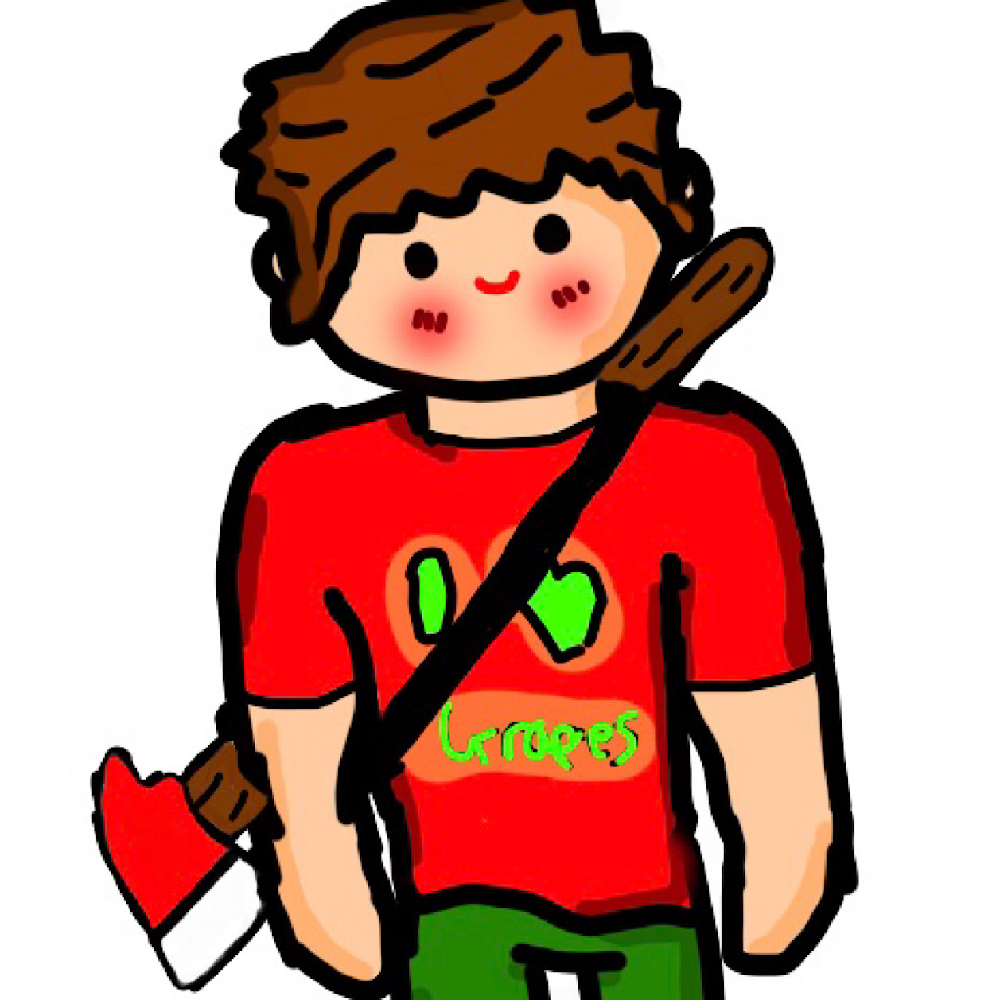
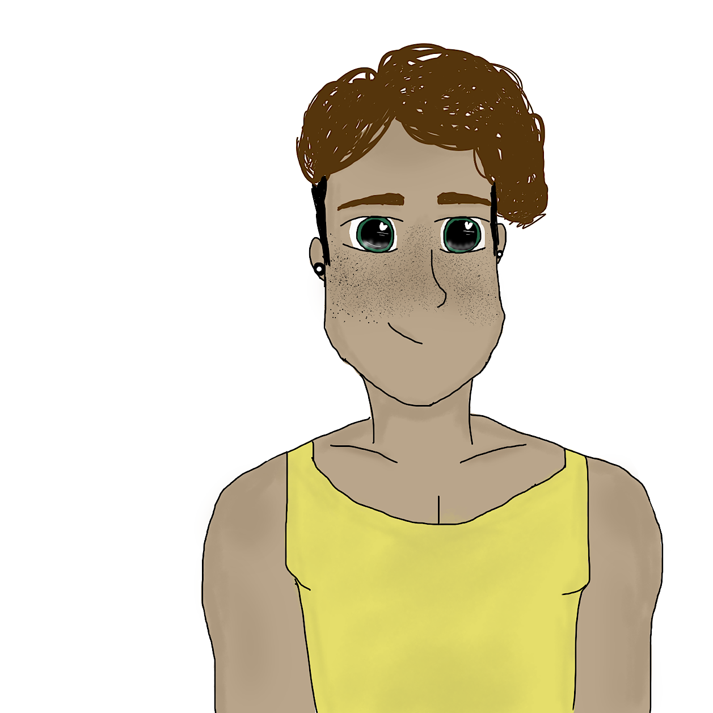

Character Evolution
George Scee


George Scee is Elise's best friend, he is also James's boyfriend. He isn't as important to Jessica's story, but he's a good character. 2017 George (left), 2020 George (right). George was created with James in 2017. There have been 6 different versions of him between 2017 and 2020. George has appeared in a total of 2 Jelise pages (5 and 9) and will hope to be in future pages.
- Name: George
- Age: 16
- Gender: Male
- Nationality: Australian/Mexican/Antarctican
- Created: 29/12/2017
- Family: Mr Scee and Mr Lloyd (parents) and Troy Scee (cousin)